Turning Fragmented Ideas into a Unified experience across all channels.
Timeline: 6 months project
My role: Service / UX designer.
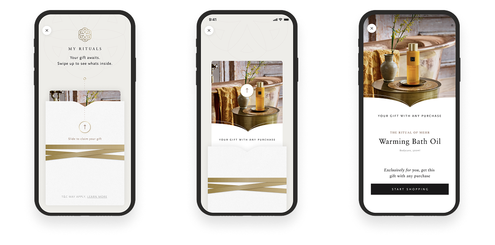
Rituals doesn't like to give discounts, therefore gifting was the main benefit in the new CRM program
Rituals had a huge opportunity, 15M members. With an average visit frequency of 2.3 times per year and a €40 threshold for identification, valuable engagement data remained untapped for the majority of transactions.
When I stepped in, the project had been in development for over a year. It was suffering from "silo-drift": multiple teams were building features in isolation, resulting in a disjointed experience between the app, the webshop, and the physical retail floor.
My Mission:
1. Bridge the Gap: Align 80+ stakeholders across CRM, Retail, and Digital.
2. Drive Identification: Create a "reason to identify" at every price point.
3. Architect the Vision: Design a seamless cross-channel journey that felt like a Rituals experience, not a technical loyalty program.
I acted as the strategic bridge between technical constraints and customer delight. My approach focused on moving the organization from feature-thinking to journey-thinking.
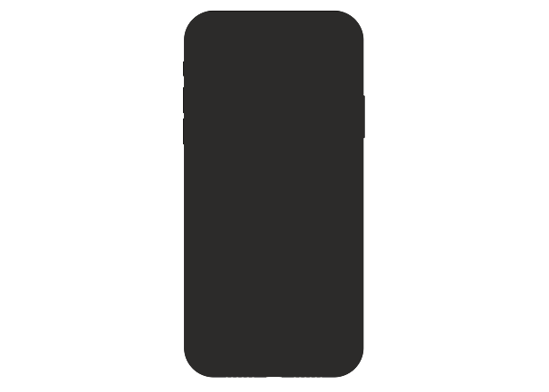
Vision of 1 of the 5 key moments of the new CRM program: Introducing the program
With 80+ stakeholders involved, and too many ideas, decision-making had stranded. I facilitated a Vision Sprint to create alignment.
The Deliverable: A vision of the new CRM program on 5 key moments in the journey. Connecting app, web, in-store and customer service
To truly understand why Rituals members weren't engaging, I immersed myself in their world, listening to customers articulate their hesitations and desires, and interviewing 10 key stakeholders, from CRM to in-store teams.
One of the biggest missed opportunities was the reason why customers weren't identifying themselves in-store: it was about a lack of clear incentive, and a story for the staff to tell.
From these insights, we created a set of core Experience Principles: Surprise, exclusive access, recognition and personalisation. They became our compass for every design decision.
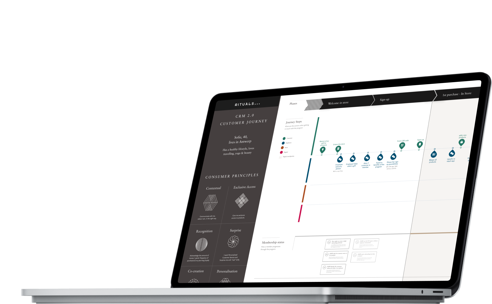
Mapped out a customer journey for 9 purchases over 4 channels
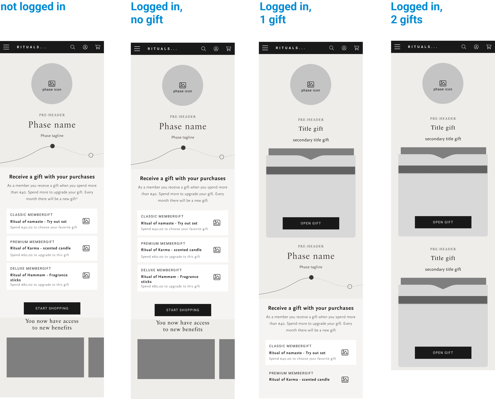
Wireframe edge cases for the CRM page
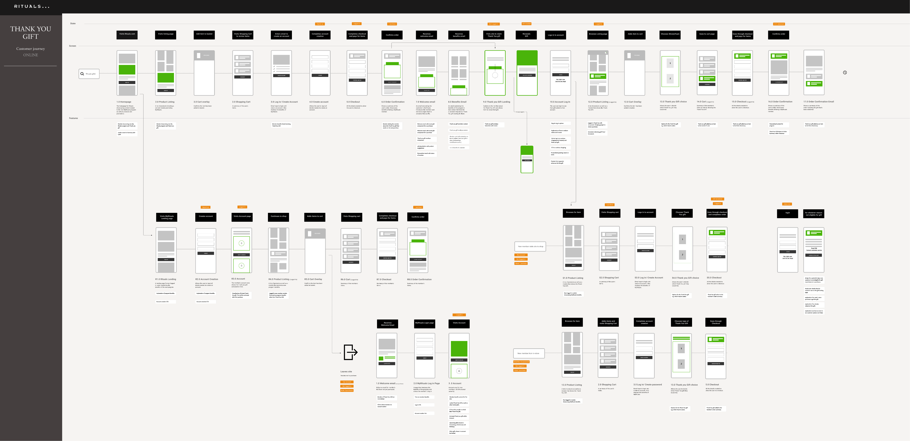
This is the low fidelity wire flow for the second purchase for web. All green elements are changes on the website. Next to web there were similar wire flows for app, customer service and in store.
Customers began receiving a small surprise gift with nearly every purchase, a delightful reason to identify themselves.
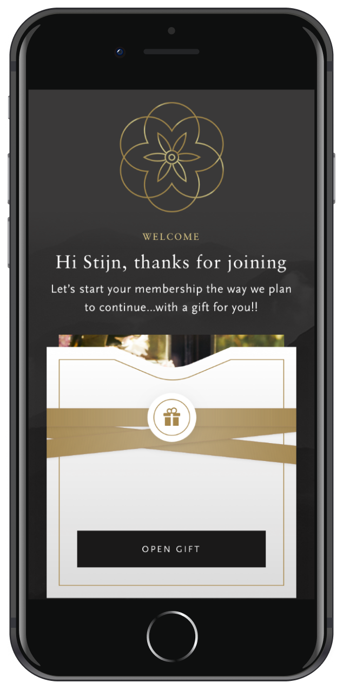
Opening your birthday gift
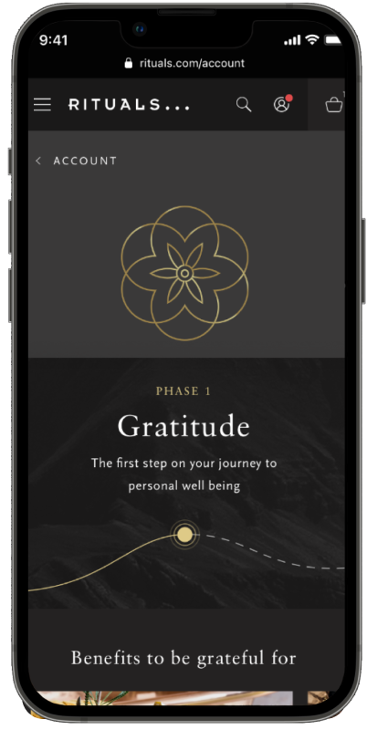
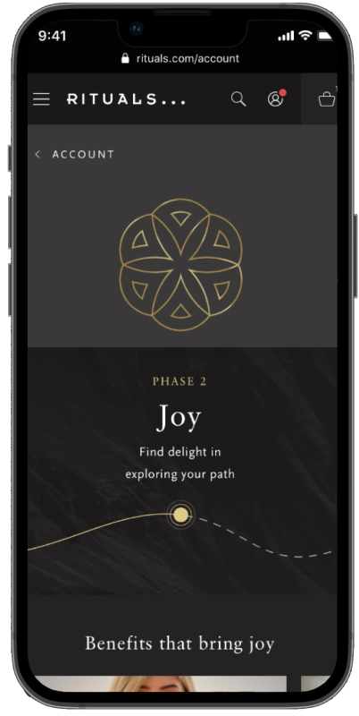
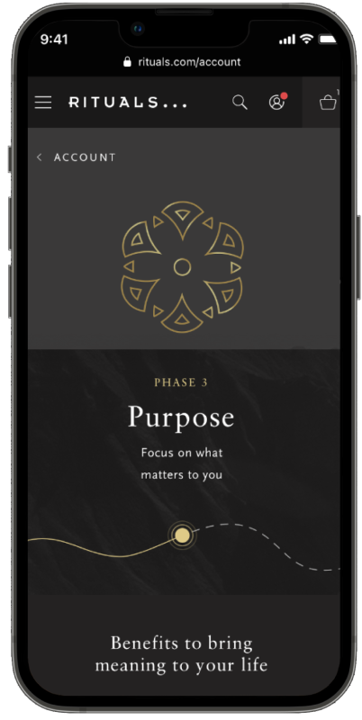
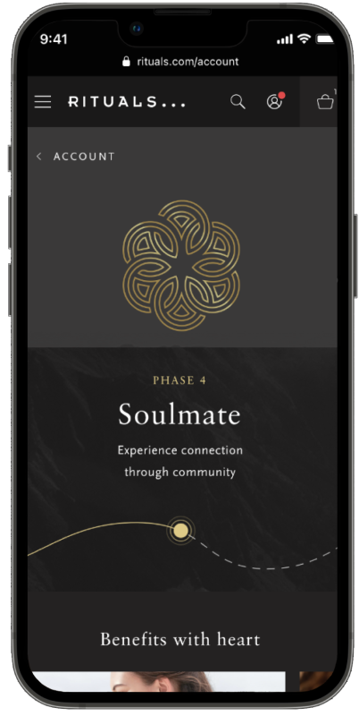
4 tiers that the customer can go through. Gifts increased in value and personalization with higher levels
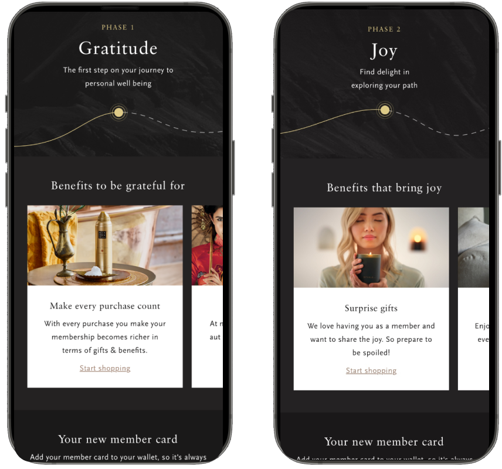
Feature of the new CRM program: different tiers and increased gift value and personalisation.
Each tier had unique tone-of-voice and copy, reflecting a more personal relationship with loyal members. With more purchases the members needed different kinds of motivations to come back.
Marketing channels, direct channels, web, app, in-store, order management system, customer service, and 6 different backends all had to be aligned to launch the new program. For this I created this service blueprint to align all parties.
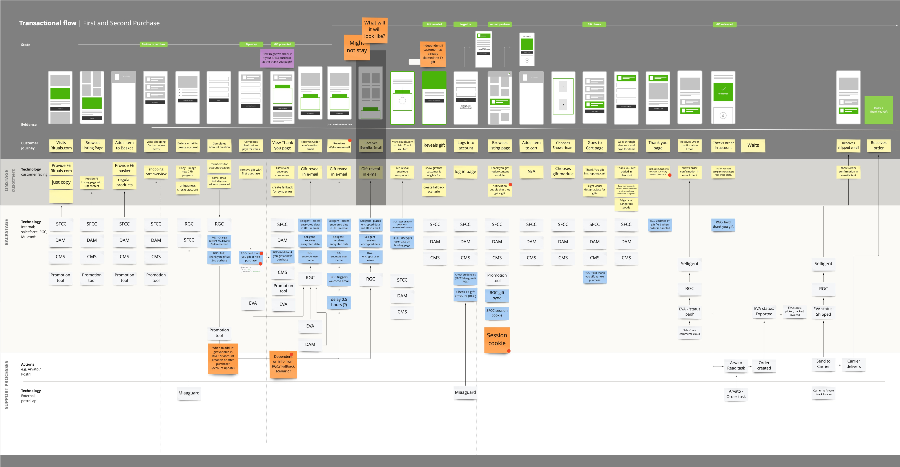
Service blueprint for the new CRM program for web
The new program was implemented in 2023 across all markets. Average purchase frequency rose from 2.3 to 2.5 per year, that seems small, but for 15M members this meant nearly €60M additional annual revenue.
Reflection:
The vision sprint was for me personally the turning point, aligning stakeholders early prevented months of fragmented decision-making.
This project taught me how to navigate extreme cross-channel complexity and keep momentum among 80+ stakeholders.
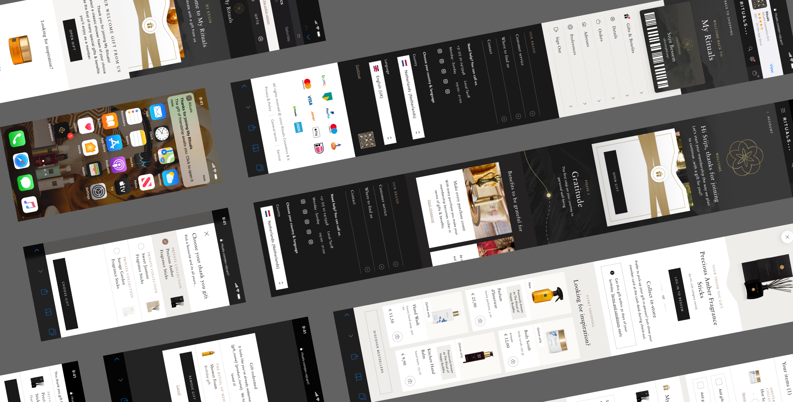